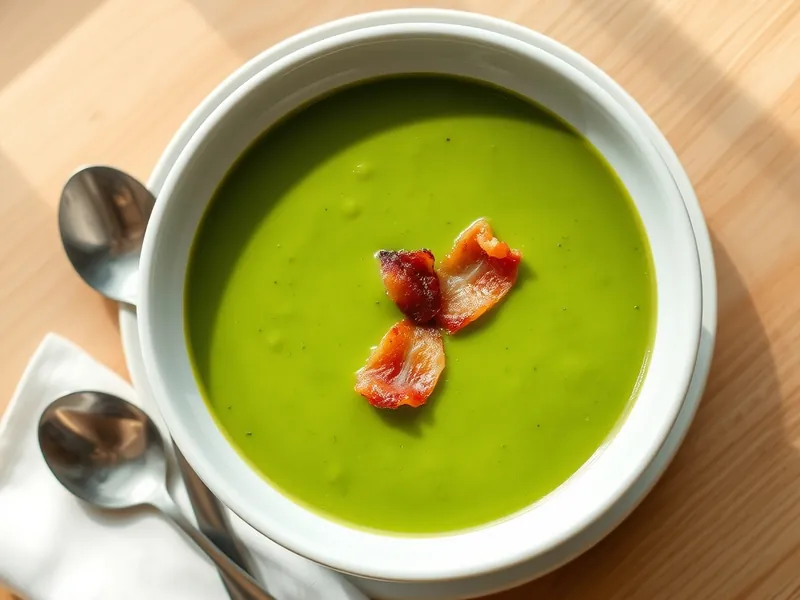

Суп-пюре из зелёного горошка
Ярко-зелёный сладковатый суп из замороженного горошка со сливками
20 мин3 порц.228 ккал на порциюБ 8 · Ж 13 · У 20Европейская кухня
Открыть в приложении: порции, таймеры, список покупок
Продукты на 3 порц.
- Зелёный горошек450 г
- Лук репчатый1 шт
- Сливочное масло20 г
- Вода600 мл
- Бульонный кубик1 шт
- Сливки 20%100 мл
- Бекон по желаниюпо вкусу
- Перец чёрный молотыйпо вкусу
Как готовить
- Мелко нарежьте лук и обжарьте на сливочном масле на среднем огне 4 минуты, пока он не станет мягким.
- Добавьте воду и бульонный кубик, доведите до кипения на сильном огне.
- Всыпьте замороженный горошек и варите 5 минут после повторного закипания, пока горошины не станут мягкими.
- Пробейте суп блендером до гладкости, влейте сливки и прогрейте 1 минуту, не кипятя.
- По желанию обжарьте бекон полосками на сухой сковороде 3-4 минуты до хруста и разложите сверху по тарелкам.
Совет. Горошек варите не дольше 5-6 минут, тогда суп останется ярко-зелёным. Для идеально гладкой текстуры протрите его через сито.